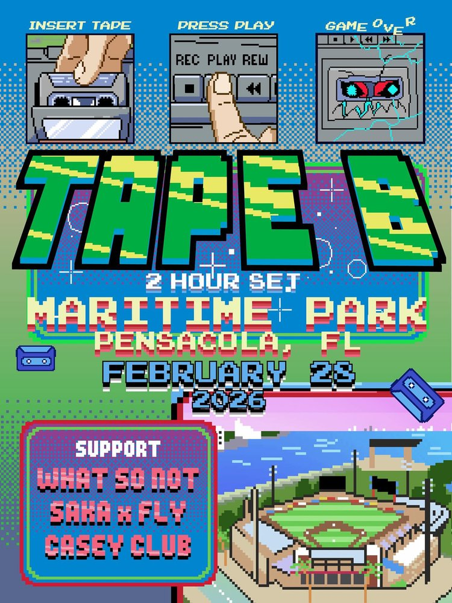

SAT FEB 28from the archive
Tape B, What So Not, Saka, Fly, Casey Club
doors 5pm
18+
Pensacola! Tape B brings a full 2-hour set to Maritime Park on February 28th, joined by What So Not, Saka x Fly, and Casey Club. (MUST BE 18+ / Doors 5PM)